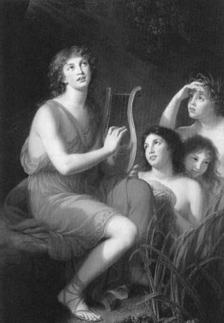

Baştanrı Zeus, Olimpos'taki sarayından Tebai kralının güzel kızı Antiyope'yi (Antiope) çiçek toplarken gözüne kestirdi ve uzun süre bakışlarını ayıramadı ondan. Sonra da hep huyu olduğu üzere onun güzelliğine vuruluverdi!.. Ne var ki elindeki yıldırımlar saçan silahlar yüzünden dünyalı güzellerin kendisini beğenmediğini de çok iyi biliyordu. O yüzden hemen bir Satiros kılığına girdi ve Olimpos'taki sarayının penceresinden o büyük boşluktaki yıldızların içine bırakıverdi kendini... Satiros kılığındaki Baştanrı; sessizce yeryüzüne indikten sonra doğruca kızın yanına gidip uzun uzun diller döktü. Arada şarkılar söyledi. Sonunda kızcağızı yumuşatıp isteğine kavuştu...

Zeus'un müzisyen oğlu Amfiyon
Bu birliktelikten gebe kalan Antiyope, başına gelenleri kimselere anlatamıyordu haliyle. Çünkü töreler engeldi buna! Gebeliği belli olmaya başlayınca da kral babasından ürküp komşu krallıklardan birine sığındı. Ne var ki babası, kızı Antiyope'nin töredışı gebeliğini duyunca erkek kardeşi Likos'a, onu arayıp bulmasını ve gerekli cezayı vermesini buyurdu. Kralın kardeşi Likos, Antiyope'yi aratıp buldurdu ve yaka paça Tebai'ye getirtti. Bir süre sonra da karnı burnundaki Antiyope, Zetos (Zethos) ve Amfiyon (Amphion) adlarını verdiği nur topu gibi iki bebek dünyaya getirdi... Bu arada Antiyope'nin kral olan babası öldü ve amcası Likos da onun tahtına kuruldu. Yeni kral Likos; ilk iş olarak, ileride tahtına el koymaya kalkarlar korkusuyla babası belirsiz bu ikizleri dağ başına bıraktırdı. Ve çok zaman olduğu gibi, bu talihsiz çocukların bakımını, o yörenin adsız bir çoban ailesi üstlendi...
Zaman içinde tez gelişen çocuklardan Zetos; avcılık, koşu, güreş gibi özel alanlarda kendini yetiştirdi. Katıldığı çeşitli yarışmalarda da üstünlüğünü kanıtladı. Ama kardeşi Amfiyon dağlarda sürülerini otlatıyor, içinde yaşadığı doğanın güzelliklerini ezgileriyle dillendirmeye çalışıyordu. Amfiyon'un müzik yeteneği, tanrı Apollon'un bile ilgisini çekti ve ona ödül olarak çok özel bir lir armağan etti. Artık gecesini gündüzünü bu çalgıyla geçirmeye başladı Amfiyon. Musiki alanında öyle bir aşamaya ulaştı ki, doğada ne varsa onlarla; ağaçlarla, hayvanlarla liri aracılığıyla konuşup anlaşabiliyordu... Ve istediği hayvanı, ağacı hatta bir tepeyi bile gönlünün çektiği yere kondurabiliyordu!..
Öte yandan Tebai'ye geri getirilen Antiyope'ye, kral olan amcası Likos ve karısı Dirke; gelenek dışı, babası belirsiz iki çocuk doğurduğu için akla hayale sığmayacak işkenceler uygulamaya başladılar. Bu işkencelerden gına getiren Antiyope, bir yolunu bulup saraydan kaçtı ve ikiz çocuklarının yaşadığı çoban ailesinin yanına sığındı. Ve yetişkin çocuklarına; geçmişte babalarıyla ve gebeliğiyle ilgili bütün gerçekleri anlattı! Onu can kulağıyla dinleyen Zetos'la Amfiyon, haliyle yıllar yılı analarına işkence etmiş olan kral Likos ve karısı Dirke'ye çok öfkelendiler... Babaları Baştanrı Zeus'un yardımıyla, kral Likos'u ve karısı Dirke'yi ülke yönetiminden uzaklaştırdılar...
Artık bundan sonra da Zetos'la Amfiyon; Tebai'yi birlikte yönetmeye başladılar. Krallıklarının ilk eylemi olarak, ülkede babasız çocuk doğuran annelerle ilgili gerekli yasayı yürürlüğe koymak oldu... Müzisyen Amfiyon, krallığının yanında gene aynı şevk ve coşkuyla lirini çalmayı sürdürdü. Öte yandan ülkede halka açık kültürel amaçlı yapılar kurdurdu... Komşu halklarla da anlaşıp aralarındaki savaş amaçlı surları yıktırmaya başladı... Kendi halkının ve komşu halkların işçileri, surları parçalayıp taşları sökerken, müzisyen kral Amfiyon da lirinden döktürdüğü ezgilerle onların işlerini yönlendiriyordu.
Bu ezgilerin eşliğinde taşlar ve kayalar, kendiliğinden yan yana ve üst üste, nasıl yerleşmeleri gerekiyorsa, öylece dizilip yerleşiyor; barışın ve sevginin ürünü olarak halkların hizmetine girecek büyük yapılara dönüşüyorlardı...